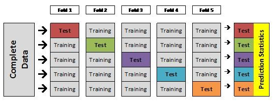

昨天我从PyData2018发现一个视频，讲如何在数据缺失的情况下挖掘出用户和产品的特征向量, 用于产品推荐系统。
Daniel Pyrathon - A practical guide to Singular Value Decomposition in Python PyCon2018
如果视频无法观看，可以前往腾讯视频
一、预备知识
1.1 协同过滤
日常生活中，像亚马逊、淘宝、京东、今日头条等各大互联网公司会无时不刻的收集我们的网络用户行为数据，并根据积累的历史行为数据对我们推送推荐内容或者推荐商品。这就是我们不曾感受到存在的推荐算法所起到的作用，这之中比较常见的实现方式是协同过滤（Collaberative Filtering）。数据设计到用户、产品及产品评价三种信息，数据类似于下图

1.2 相似的人更容易做相似的事
协同过滤的核心想法是相似的人往往会做相似的事情。比如，A 和 B 是两个崇尚科技的人（相似信息源于大量的观影数据），而 B 喜欢 看科幻片 ，那么我们猜测 A 也喜欢 科幻片。


1.3 问题提出
上面我们展示的用户电影可视化图，实际上就是推荐算法中经常用到的用户-评价矩阵,
- 那么我们如何对矩阵进行计算，才能获取相似性信息？
- 有了相似性信息我们又如何去利用相似性信息去做产品推荐？
- 我们知道两个向量通过余弦相似计算就可以得出两个向量的近似程度，那么这些向量我们又该如何从用户-评价矩阵提取呢？
1.4 奇异值分解SVD
这就用到奇异值分解（Singular Value Decompositon），简称SVD。具体怎么提取不是我们本文的重点，Python都帮我们实现了，我们只需要稍微了解下SVD，就直接上手用。
比如我们现在有了用户-评价矩阵

给定一个矩阵，我们都可以分解得到两种矩阵，一种是用户信息矩阵，一种是评价信息（产品）矩阵。这两种矩阵在本例中使用了n_features = 2，即对于用户向量或者产品评价向量长度均为2，实际上也可以为其他数字（比如3，4。。）

那么User1对于蓝色电影的喜欢程度是可以通过向量计算得出3.52

1.5 用户相似性
如下图，在二维坐标中我们可以看出不同用户间的相似度。

二、项目实战
我们将使用Python的surprise库，对MovieLens数据集构建一个简单的协同过滤推荐系统。
安装方法:
pip3 install scikit-surprise
如果你的anaconda自带jupyter notebook。那么你可能需要使用下面的安装方法
conda install -c conda-forge scikit-surprise
从安装名我们发现其余scikit的特殊关系，所以熟悉scikit的同学看本文会比较轻松。
代码下载
## 2.1 准备数据 MovieLens数据集含有1000个用户的100000个观影评分记录。其中我们只需要使用该数据集中的u.data文件，该文件以行存储，每一行包括``userID itemID rating timestamp``,且各个字段之间以``\t``间隔。部分数据如下
['196\t242\t3\t881250949\n',
'186\t302\t3\t891717742\n',
'22\t377\t1\t878887116\n',
'244\t51\t2\t880606923\n',
'166\t346\t1\t886397596\n']
2.2 切割数据
在surprise库中我们可以创建读取器Reader的格式。在本例中，我们使用\t将每行数据分隔后分配给
user item rating timestamp
定义好Reader格式后，我们使用Dataset对象对数据进行读取操作。
from surprise import Reader, Dataset
#定义数据格式
reader = Reader(line_format='user item rating timestamp', sep='\t')
#使用reader格式从u.data文件中读取数据
data = Dataset.load_from_file('u.data', reader=reader)
2.3 交叉检验
surprise提供了交叉验证（crossvalidation）的接口，crossvalidation是啥？
我们先看图解释下
一份数据平均的分成5份，如果4份做训练集，1份做测试集。那么当我们训练模型的时候有1/5的数据我们的模型是无法学习的，这就浪费了20%。
但是我们又不能拿把所有的数据经过一次训练，再拿其中训练过的数据去做预测。因为这样会导致准确率a非常高，但放到实践中这个模型的预测准确率实际上是低于a的。
所以就有了crossvalidation交叉检验。我们一份数据训练5次，每次完整的数据分成4份训练1份测试。这样就解决了上面遇到的问题。如下图

#n_folds=5是指数据分成5份，做5次训练预测
data.split(n_folds=5)
2.4 最优化Optimization
训练怎么达到最优，那就要有Optimization，也就是要有一个可供参考的标准。
训练的方式与其他机器学习方法类似，要使得一种算法试图优化其预测值尽可能接近真实值。在协作过滤应用中，我们的算法将尝试预测某个用户-电影组合的评级，并将该预测值与真实值进行比较。 使用经典误差测量如均方根误差（Root mean squared error，RMSE）和平均绝对误差（Mean absolute error，MAE）来测量预测值和真实值之间的差异。
在surprise库中，我们有广泛的算法可供选择，并为每种算法（SVD，NMF，KNN）提供多种参数选择。 就我们的例子而言，我们将使用SVD算法。 优化目标measures采用RMSE', 'MAE
from surprise import SVD, evaluate
#相当于scikit的机器学习算法的初始化
svd = SVD()
#相当于scikit中的score，模型评估
evaluate(svd, data, measures=['RMSE', 'MAE'])
Run
Evaluating RMSE, MAE of algorithm SVD.
------------
Fold 1
RMSE: 0.9324
MAE: 0.7346
------------
Fold 2
RMSE: 0.9422
MAE: 0.7423
------------
Fold 3
RMSE: 0.9367
MAE: 0.7398
------------
Fold 4
RMSE: 0.9310
MAE: 0.7323
------------
Fold 5
RMSE: 0.9393
MAE: 0.7422
------------
------------
Mean RMSE: 0.9363
Mean MAE : 0.7382
------------
------------
CaseInsensitiveDefaultDict(list,
{'mae': [0.734621556055766,
0.7422621194493935,
0.7398192302116903,
0.7323079165231016,
0.7422361108902022],
'rmse': [0.9324301825022976,
0.9421845177536299,
0.9366580726086371,
0.9310376368987473,
0.9392636694333337]})
从上面运行结果看，optimizer选用RMSE后，5次训练的平均准确率高达93.63%。
2.5 预测
最后我们还是很想看看训练出模型，其预测能力到底结果怎么样？
这次我们就做交叉验证了，省事点直接全部丢给SVD去训练
from surprise import SVD
from surprise import Reader, Dataset
#读取数据
reader = Reader(line_format='user item rating timestamp', sep='\t')
data = Dataset.load_from_file('u.data', reader=reader)
data = data.build_full_trainset()
#初始化svd模型,用data训练模型
svd =SVD()
svd.fit(data)
Run
<surprise.prediction_algorithms.matrix_factorization.SVD at 0x10ab7d7f0>
上面的代码
data = data.build_full_trainset()
这一行本来我没有写，但是当我注释掉这一行。出现下面的错误，
DatasetAutoFolds' object has no attribute 'global_mean' on python surprise
最后在stackoverflow中找到解决办法，需要将data转化为surprise能够用的trainset类。
https://stackoverflow.com/questions/49263964/datasetautofolds-object-has-no-attribute-global-mean-on-python-surprise
下面继续我们的预测，userid为196，itemid为302， 其真实评分为4。
userid = str(196)
itemid = str(302)
actual_rating = 4
print(svd.predict(userid, 302, 4))
user: 196 item: 302 r_ui = 4.00 est = 3.41 {'was_impossible': False}
预测值为3.41， 真实值为4。还是相对靠谱的。